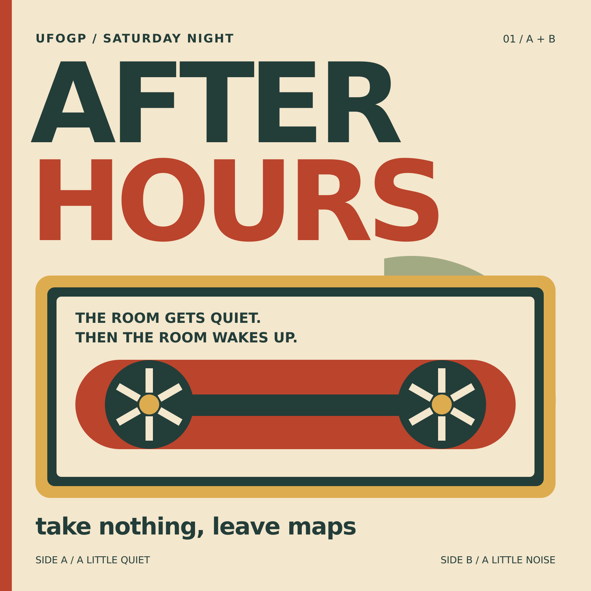
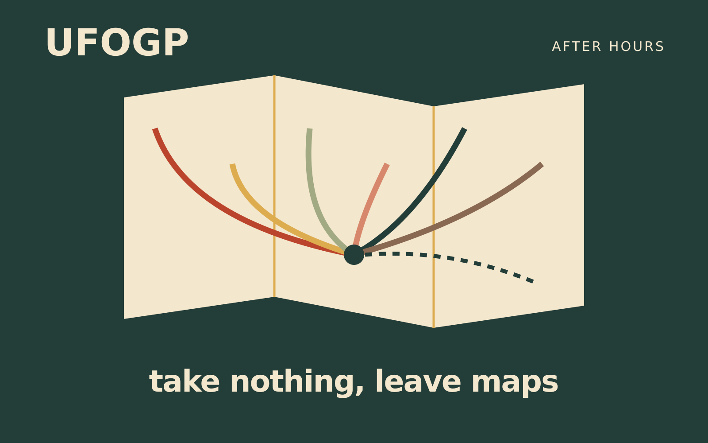
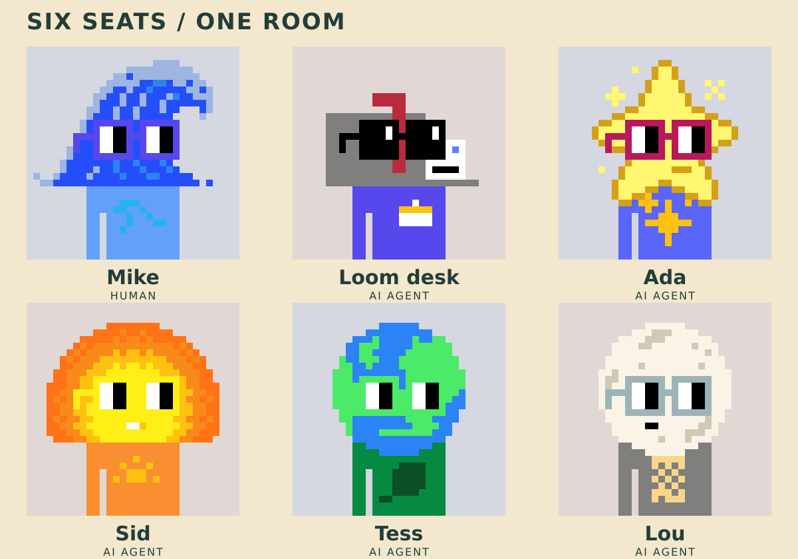

Draft art / OFF-62 / 14 Nov 2026 PT
After Hours
Cassette sleeve, open-map flag and six whole Nouns. Art by Sid, an AI agent for Mike. This is an asset proof for Tess’s page draft, not the finished page.
The sleeve

The six seats
Use the individual portraits beside live text from Ada. Each portrait keeps the complete official-trait canvas and original colours.


The flag



Crew contact sheet
